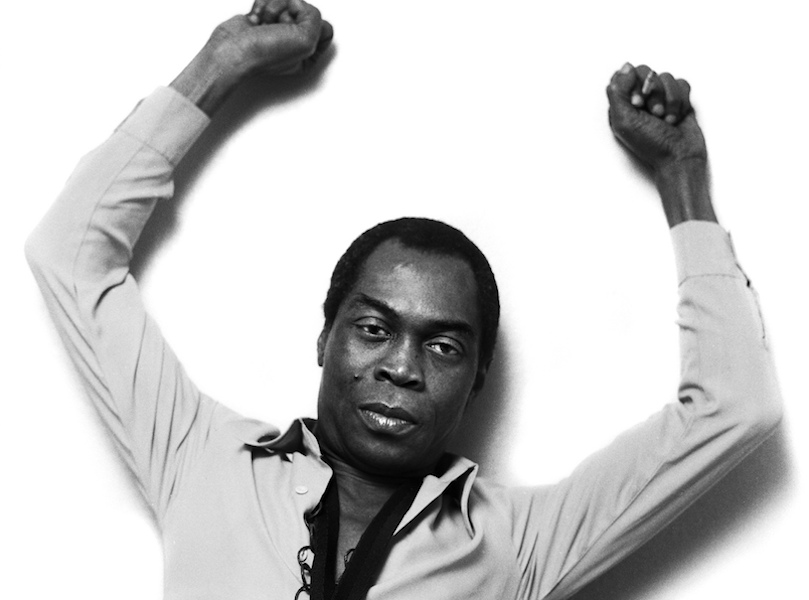

Fela Anikulapo Kuti
Father of modern day Afro-beat

A picture of Mr Fela Anikulapo Kuti during a photoshoot.
Here's a time line of Mr Fela's life:
- 1938 - Born in Abeokuta, Ogun State. Fela was born into a middle class family of Nigerian political activists.
- 1958 - He was sent to study medicine in London but instead enrolled in Trinity College of Music.
- 1960 - Kuti married his first wife, Remilekun (Remi) Taylor, with whom he had three children with.
- 1963 - He formed his first band while in London and Kuti moved back to the newly independent Federation of Nigeria, re-formed Koola Lobitos, and trained as a radio producer for the Nigerian Broadcasting Corporation.
- 1967 - Kuti travelled to Ghana looking for a new musical direction. He called his style Afrobeat, a combination of highlife, funk, jazz, salsa, calypso, and traditional Yoruba music.
- 1969 - He first visited the United States and during this and subsequent trips he was influenced by Sandra Isidore a member of the Black Panther Party where he discovered the Black Power Movement. He renamed the band Nigeria 70.
- 1970 - After Kuti and his band returned to Nigeria, the group was renamed the Africa '70 as lyrical themes changed from love to social issues. Soon afterwards he formed the Kalakuta Republica commune, recording studio, and home for many people connected to the band. Which he later declared independent from the Nigerian state as a protest against the military government. He also opened a nightclub he called the Shrine in Lagos which featured his band Africa 70 and elaborate stage shows.
- 1977 - Fela recorded the album Zombie which was an attack on the Nigerian military and in particular its role in Biafra during the Nigerian Civil War. Eventually one thousand soldiers were ordered to shut down the Kalakuta Republic. Fela and other band members were severely beaten in the raid including he's elderly mother, their instruments and music destroyed, and the commune building was burned down.
- 1978 - He married 27 women, many of them were dancers, composers, and singers with whom he worked.
- 1979 - The 1977 attack did not end his critique of the Nigerian government. He founded a new political party, which he called MOP, Movement of the People. Kuti attempted to run for office in Nigeria, but was banned from political activity by the government.
- 1983 - Kuti nominated himself for president in Nigeria's first elections in decades, but his candidature was refused. At this time, Kuti created a new band, Egypt 80
- 1984 - Muhammadu Buhari's government, of which Kuti was a vocal opponent, jailed him on a charge of currency smuggling. Amnesty International and others denounced the charges as politically motivated. After 20 months, General Ibrahim Babangida released him from prison. On his release, Kuti divorced his 12 remaining wives.
- 1989 - Kuti and Egypt 80 released the anti-apartheid album Beasts of No Nation that depicted U.S. President Ronald Reagan, UK Prime Minister Margaret Thatcher, and South African State President Pieter Willem Botha on its cover.
- 1990 - Kuti eventually stopped performing in the 1990s partly because a new Nigerian military dictatorship increased its repressive measures toward him. Eventually, he ceased releasing albums altogether.
- 1997 - He dies at 59. Rumor has it that Kuti had been an AIDS denialist, and his widow maintained that he did not die of AIDS.
“To be spiritual is not by praying and going to church.
Spiritualism is the understanding of the universe so that it can be a better place to live in”.
--Fela
If you have time, you should read more about this incredible human being on his Wikipedia entry.